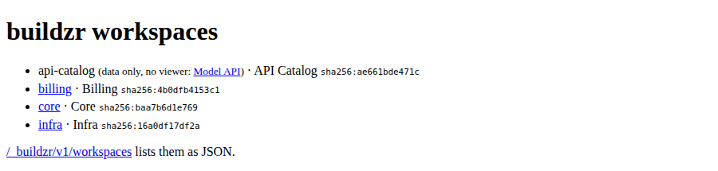

buildzr.yaml¶
buildzr.yaml is the config file of your project. It holds what the buildzr commands need besides their options: where your workspaces folder is and the build settings. The file is optional; without it, the commands use the folder workspaces and the defaults.
This page is a reference. It lists where the commands look for the file, every key, how values are read, example files and the error messages. The options of each command are in the Command reference.
Words used on this page¶
| Word | Meaning |
|---|---|
| workspaces folder | The folder of Python files that create your workspaces. The workspaces: key names it, or lists the files and folders to build instead. |
| built workspace | The folder that buildzr build writes for one workspace: the viewer, the model data and a file called build.json. |
| build output | The folder that holds every built workspace. The build.out key names it. |
| data-only workspace | A built workspace without the viewer, only the model data. |
How the commands use this file¶
Each setting comes from the first of these that has it:
- An option on the command line.
buildzr.yaml.- The built-in default.
When workspaces: is a list, an entry can set its own build settings, which come between the option and the build: section; see Choosing which files to build.
No environment variable sets a setting directly. You can use environment variables only inside the file, as ${VAR}.
buildzr build and buildzr serve read the whole file, so a problem anywhere in it stops either command. build uses workspaces and build; it never uses serve. When you give serve a folder that already holds built workspaces, it uses only the serve settings of the file.
When the file has a problem, the command prints every problem, one per line, and exits with code 2. Examples of error messages shows the format.
Where the commands find the file¶
Without the -c option, a command looks for the file as follows:
- It starts in the current folder and walks up to the parent folders. The first
buildzr.yamlit finds is used. - It stops after the folder that contains
.git, so it never reads a file outside your Git repository. - The name must be exactly
buildzr.yaml. If a folder hasbuildzr.ymlor.buildzr.yamland nobuildzr.yaml, the search stops withfound buildzr.yml; the config file must be named buildzr.yaml.
Relative paths in the file are relative to the folder that holds the file, not to the current folder. Without a file, the default folders workspaces and .buildzr/build are relative to the current folder.
Keys¶
| Key | Type | Default | Meaning |
|---|---|---|---|
version |
integer | 1 |
The version of the file format. Only 1 is accepted. |
workspaces |
text (path), or a list | workspaces |
The workspaces folder. A path to a single .py file also works. Or a list of files and folders to build, each with its own build settings: see Choosing which files to build. -w on the command line replaces it. |
workspaces[].path |
text (path) | none | In a list: a .py file, or a folder whose Python files are all built. An entry that is only a path is the same as an entry with only path. |
workspaces[].build |
k, text_color, viewer |
none | In a list: the build settings of this entry’s workspaces. Each one wins over the same key of build. out is not allowed here. |
build.k |
whole number, at least 1 | 4 |
Room for a box that contains other boxes, as a multiple of the area of an empty box; the same value as --k. See Choosing a value for --k. |
build.text_color |
wcag or c4 |
wcag |
The text colour on boxes. See --text-color in buildzr build. |
build.viewer |
true / false |
true |
false builds data-only workspaces. |
build.out |
text (path) | .buildzr/build |
The build output: build writes one folder per workspace into it, and serve serves it. |
serve.public_url |
text (http:// or https:// URL) |
none | The address at which readers reach the server, for example behind a proxy; the same value as --public-url. The links of the Model API (viewerUrl, apiUrl) start with it. A / at the end is dropped. Without it, the links start with /. |
serve.port |
whole number, 1 to 65535 | 8000 |
The port serve listens on; the same value as -p/--port. |
serve.host |
text | 127.0.0.1 |
The address serve listens on; the same value as --host. 127.0.0.1 lets only this machine connect. 0.0.0.0 shares the server with every machine on the network, and serve has no login, so set it only on purpose. |
serve.cors_origins |
list of text | [] |
The web origins (https://host[:port], no path, no *) whose pages may read the Model API from a browser; the same values as repeated --cors-origin. An empty list means none. --cors-origin on the command line replaces this list; it does not add to it. |
Unknown keys are errors. Secrets never go in this file: the keys token, password and secret are refused.
Keys of older versions are refused with a line that says what to do: workspace (use workspaces), and targets and default_target (buildzr deploy no longer exists).
To let your editor check the file, use the JSON Schema buildzr/site/schema/config.schema.json. Add # yaml-language-server: $schema=<path or URL of the schema> as the first line of the file.
Values from environment variables¶
You can use environment variables in the text values workspaces (also each path of a list), build.out, serve.public_url, serve.host and each entry of serve.cors_origins. Not in serve.port, which is a number.
- Write
${NAME}, whereNAMEmatches[A-Z_][A-Z0-9_]*. Write${NAME:-fallback}to usefallbackwhen the variable is unset or empty. Write$$for a literal$. Any other$is an error. - A variable that is unset or empty, and has no fallback, is an error.
- A value is expanded only when a command uses it.
How the file is read¶
The file is YAML, read with stricter rules than most YAML tools use:
- Only
true,false,null, plain decimal integers (4) and plain decimal numbers (1.5) are typed. Everything else is text, includingyes,no,on,off,y,n,0755,1:30and dates. A keyon:stays the texton. - Types are checked, not converted:
k: "4"is an error. - Duplicate keys, anchors (
&a), aliases (*a),<<merges and!tagsare errors. - All problems are listed at once, each as
buildzr.yaml:<line>: <key>: <message>.
Example files¶
A project whose models live in another folder:
A project that builds data-only workspaces, with more room for boxes that contain other boxes, into a folder named after the Git branch:
Settings for buildzr serve on a shared machine behind a proxy. Each one is used only when its option is not given on the command line. Set public_url in the file when the same project is served at a different address in each environment, such as a preview per branch: the variable gives the address, so the command stays the same everywhere.
serve:
public_url: "https://${PREVIEW_HOST:-architecture.example.com}"
port: 8080
host: 0.0.0.0
cors_origins:
- https://dashboard.example.com
A project with several workspace files¶
A project can keep many model files in its workspaces folder, and one file can create several workspaces. This project has three workspaces in two files. Serve your workspaces builds and serves the same project step by step.
my-project/
├── buildzr.yaml
└── architecture/
├── billing.py creates the workspace Billing
└── platform.py creates the workspaces Core and Infra
buildzr.yaml names the workspaces folder:
architecture/billing.py creates one workspace:
from buildzr.dsl import Workspace, SoftwareSystem
with Workspace("Billing") as w:
invoicing = SoftwareSystem("Invoicing")
payments = SoftwareSystem("Payment Provider")
invoicing >> "Collects payments through" >> payments
architecture/platform.py creates two:
from buildzr.dsl import Workspace, Person, SoftwareSystem
with Workspace("Core") as core:
customer = Person("Customer")
shop = SoftwareSystem("Web Shop")
payments = SoftwareSystem("Payment Provider")
customer >> "Buys from" >> shop
shop >> "Takes payments through" >> payments
with Workspace("Infra") as infra:
cluster = SoftwareSystem("Kubernetes Cluster")
database = SoftwareSystem("Database Service")
cluster >> "Stores data in" >> database
Build the project. Every workspace of every file gets its own built workspace:
$ buildzr build
built .buildzr/build/billing (2 elements, 1 relationship, 0 views; modelHash sha256:4b0dfb4153c1…)
built .buildzr/build/core (3 elements, 2 relationships, 0 views; modelHash sha256:baa7b6d1e769…)
built .buildzr/build/infra (2 elements, 1 relationship, 0 views; modelHash sha256:16a0df17df2a…)
The build output then holds one folder per workspace:
.buildzr/build/
├── billing/ build.json, index.html, assets/, data/
├── core/ build.json, index.html, assets/, data/
└── infra/ build.json, index.html, assets/, data/
buildzr serve finds all three up to date and serves each one at its own address:
$ buildzr serve
up to date: billing, core, infra
Serving .buildzr/build at http://127.0.0.1:8000/ (Ctrl+C to stop)
http://127.0.0.1:8000/billing/
http://127.0.0.1:8000/core/
http://127.0.0.1:8000/infra/
Workspace list at http://127.0.0.1:8000/_buildzr/v1/workspaces
What to know about such a project:
- Folder names come from workspace names, not from file names:
Workspace("Core")inplatform.pybecomescore, at/core/. The naming rule lowers the case and replaces spaces and other characters with-. -
Two workspaces with the same name stop the build before anything is written. If
architecture/legacy.pyalso createdWorkspace("billing"),buildwould print, with the full path of your workspaces folder:buildzr: error: two workspaces would both be built as "billing": "Billing" in billing.py and "billing" in legacy.py (paths in /home/me/my-project/architecture); rename one of themThe same error appears when one model file imports another, for example
from billing import invoicinginlegacy.py: the import runs thewith Workspace("Billing")block ofbilling.pyagain, solegacy.pycreates a second Billing workspace. -
-wwith one file builds only that file and removes nothing, not even the built workspaces of files you deleted: -
A broken file breaks only its own workspaces. With a typo in the last line of
platform.py, Core and Infra are broken and Billing is built as usual. The build exits with code 1:from buildzr.dsl import Workspace, Person, SoftwareSystem with Workspace("Core") as core: customer = Person("Customer") shop = SoftwareSystem("Web Shop") payments = SoftwareSystem("Payment Provider") customer >> "Buys from" >> shop shop >> "Takes payments through" >> payments with Workspace("Infra") as infra: cluster = SoftwareSystem("Kubernetes Cluster") database = SoftwareSystem("Database Service") cluster >> "Stores data in" >> databse$ buildzr build ... NameError: name 'databse' is not defined built .buildzr/build/billing (2 elements, 1 relationship, 0 views; modelHash sha256:4b0dfb4153c1…) buildzr: BROKEN: workspace core (architecture/platform.py) failed at the model step NameError: name 'databse' is not defined platform.py, line 13: cluster >> "Stores data in" >> databse this workspace is broken; the viewer says so buildzr: BROKEN: workspace infra (architecture/platform.py) failed at the model step NameError: name 'databse' is not defined platform.py, line 13: cluster >> "Stores data in" >> databse this workspace is broken; the viewer says so [exit code 1]Core is broken too, although the error is in the part that creates Infra: when a file fails, none of its workspaces can be trusted.
servelists the broken workspaces next to the good one, and the list for programs gives each one itsstatus:{ "apiVersion": "1", "workspaces": [ { "name": "billing", "path": "/billing/", "workspaceName": "Billing", "status": "ok", "viewerUrl": "/billing/", "apiUrl": "/billing/api/v1/", "llmsUrl": "/billing/llms.txt", "modelHash": "sha256:4b0dfb4153c1e2f16f2d94c116fc6c70c705b5935e51069616ec8f3e30feac0b", "builtAt": "2026-10-18T16:45:54Z", "source": "billing.py" }, { "name": "core", "path": "/core/", "workspaceName": "Core", "status": "broken", "viewerUrl": "/core/", "apiUrl": "/core/api/v1/", "llmsUrl": "/core/llms.txt", "modelHash": null, "builtAt": "2026-10-18T16:45:54Z", "source": "platform.py", "stage": "model", "errors": [ "NameError: name 'databse' is not defined", "platform.py, line 13: cluster >> \"Stores data in\" >> databse" ] }, { "name": "infra", "path": "/infra/", "workspaceName": "Infra", "status": "broken", "viewerUrl": "/infra/", "apiUrl": "/infra/api/v1/", "llmsUrl": "/infra/llms.txt", "modelHash": null, "builtAt": "2026-10-18T16:45:54Z", "source": "platform.py", "stage": "model", "errors": [ "NameError: name 'databse' is not defined", "platform.py, line 13: cluster >> \"Stores data in\" >> databse" ] } ] }Fix the typo and build again: all three are ok. When a workspace is broken has the details.
from buildzr.dsl import Workspace, Person, SoftwareSystem with Workspace("Core") as core: customer = Person("Customer") shop = SoftwareSystem("Web Shop") payments = SoftwareSystem("Payment Provider") customer >> "Buys from" >> shop shop >> "Takes payments through" >> payments with Workspace("Infra") as infra: cluster = SoftwareSystem("Kubernetes Cluster") database = SoftwareSystem("Database Service") cluster >> "Stores data in" >> database$ buildzr build built .buildzr/build/billing (2 elements, 1 relationship, 0 views; modelHash sha256:4b0dfb4153c1…) built .buildzr/build/core (3 elements, 2 relationships, 0 views; modelHash sha256:baa7b6d1e769…) built .buildzr/build/infra (2 elements, 1 relationship, 0 views; modelHash sha256:16a0df17df2a…)
Choosing which files to build¶
With workspaces: architecture, every model file of the folder is built, and every workspace gets the same build settings. To build only some files, or to give one file its own settings, make workspaces: a list of files and folders.
This continues the project above. The team adds architecture/api_catalog.py, a list of the services and their APIs that scripts and AI assistants read through the Model API. Nobody looks at it in a browser, so it needs no viewer:
from buildzr.dsl import Workspace, SoftwareSystem
with Workspace("API Catalog") as w:
orders = SoftwareSystem("Orders API", "REST, owned by the shop team")
invoices = SoftwareSystem("Invoices API", "REST, owned by the billing team")
payments = SoftwareSystem("Payment Provider", "External")
orders >> "Asks for an invoice through" >> invoices
invoices >> "Collects payments through" >> payments
my-project/
├── buildzr.yaml
└── architecture/
├── api_catalog.py creates the workspace API Catalog
├── billing.py creates the workspace Billing
└── platform.py creates the workspaces Core and Infra
This buildzr.yaml lists the three model files. Platform diagrams have systems inside other systems, so platform.py gets more room for them (k: 9); the catalog is built without the viewer:
build:
k: 4
workspaces:
- architecture/billing.py
- path: architecture/platform.py
build:
k: 9
- path: architecture/api_catalog.py
build:
viewer: false
Each entry is a path, or a mapping with path and an optional build that holds k, text_color or viewer. The built line of a workspace shows the settings that are not the defaults:
$ buildzr build
built .buildzr/build/billing (2 elements, 1 relationship, 0 views; modelHash sha256:4b0dfb4153c1…)
built .buildzr/build/core (k 9; 3 elements, 2 relationships, 0 views; modelHash sha256:baa7b6d1e769…)
built .buildzr/build/infra (k 9; 2 elements, 1 relationship, 0 views; modelHash sha256:16a0df17df2a…)
built .buildzr/build/api-catalog (data only; 3 elements, 2 relationships, 0 views; modelHash sha256:ae661bde471c…)
serve serves the data-only workspace like the others, but gives the address of its Model API instead of a viewer:
$ buildzr serve
up to date: api-catalog, billing, core, infra
Serving .buildzr/build at http://127.0.0.1:8000/ (Ctrl+C to stop)
http://127.0.0.1:8000/api-catalog/api/v1/ (data only, no viewer)
http://127.0.0.1:8000/billing/
http://127.0.0.1:8000/core/
http://127.0.0.1:8000/infra/
Workspace list at http://127.0.0.1:8000/_buildzr/v1/workspaces
The index page at http://127.0.0.1:8000/ links the Model API of the catalog, and in the workspace list for programs its viewerUrl is null.

The index page with the data-only workspace api-catalog: it has no viewer link.
How a list works:
- Only the listed files are built. A model file in
architecturethat is not on the list is not built. Paths are relative to the folder that holdsbuildzr.yaml, and they may use environment variables. -
A folder entry builds every model file in it, as a workspaces folder does: its subfolders too, and not the files and folders whose name starts with
_or.. Itsbuildsettings apply to each of those files:A folder entry that holds no model file prints a warning and builds nothing; the other entries are built as usual.
-
Each setting of a workspace comes from the first of these that has it:
- An option on the command line:
--k,--text-color,--no-viewer. - The
buildof the file’s entry. - The
buildsection of the file. - The built-in default.
- An option on the command line:
-wreplaces the list.buildzr build -w architecture/platform.pybuilds that file with the settings of thebuildsection, so withk4, not 9. To build one file with the settings of its entry, runbuildzr buildwithout-w.- A change to one entry rebuilds only its workspaces. The settings of each workspace are part of its fingerprint. Change
k: 9tok: 12, andservebuilds Core and Infra again and finds Billing and API Catalog up to date. -
Taking a file off the list removes its built workspace on the next full build, as deleting the file does with a workspaces folder. Without the
api_catalog.pyentry:$ buildzr build built .buildzr/build/billing (2 elements, 1 relationship, 0 views; modelHash sha256:4b0dfb4153c1…) built .buildzr/build/core (k 9; 3 elements, 2 relationships, 0 views; modelHash sha256:baa7b6d1e769…) built .buildzr/build/infra (k 9; 2 elements, 1 relationship, 0 views; modelHash sha256:16a0df17df2a…) removed api-catalog: its model file architecture/api_catalog.py is no longer in the workspaces: listbuildzr build -w FILEandservenever remove anything. A build removes only the workspaces it built itself:build.jsonrecords the config file of the list, so a build of another config file, or of a single path with-w, never removes the workspaces of this list. -
A path that does not exist stops the command before anything is built, with the line of the entry. With a typo in the first entry:
$ buildzr build buildzr.yaml:2: workspaces[0]: architecture/biling.py not found (relative to buildzr.yaml's folder) [exit code 2]Entries are counted from 0:
workspaces[0]is the first one. -
A file may be on the list only once, also through a folder entry. Both entries are named:
$ buildzr build buildzr.yaml:3: workspaces[1]: architecture holds architecture/platform.py, which is already in workspaces[0] (line 2); list each file once [exit code 2]An empty list (
workspaces: []) is an error too.
Examples of error messages¶
Each message names the line of the file and the key it is about.
A value of the wrong type:
A secret in the file. The message tells you where to keep it instead:
buildzr.yaml:3: build: unknown key "token". Secrets never go in this file; keep them in an environment variable.
A file written for an older version:
buildzr.yaml:1: workspace: removed: use workspaces: (a folder; a single .py file path also works)
buildzr.yaml:2: targets: removed: buildzr deploy no longer exists; delete this key
An environment variable that is not set. This uses the second example file above, with out: "public/${BRANCH}" and no fallback:
$ buildzr build
buildzr.yaml:3: build.out: environment variable BRANCH is not set (used in "public/${BRANCH}")
[exit code 2]
The last line of each command example, such as [exit code 2], shows the exit code. The command does not print it.
Python functions¶
The module buildzr.site.config has these functions for scripts and tests: find_config(start), load_config(path), resolve_workspaces(cfg, env), resolve_workspace_entries(cfg, env) (a list of workspaces:, or None), workspace_files(cfg, entries) (the model files of each entry; it checks that they exist and are listed once), resolve_build(cfg, env) and resolve_serve(cfg, env). Problems raise ConfigError. load_config does not read environment variables; the resolve_* functions do.